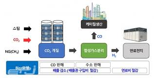
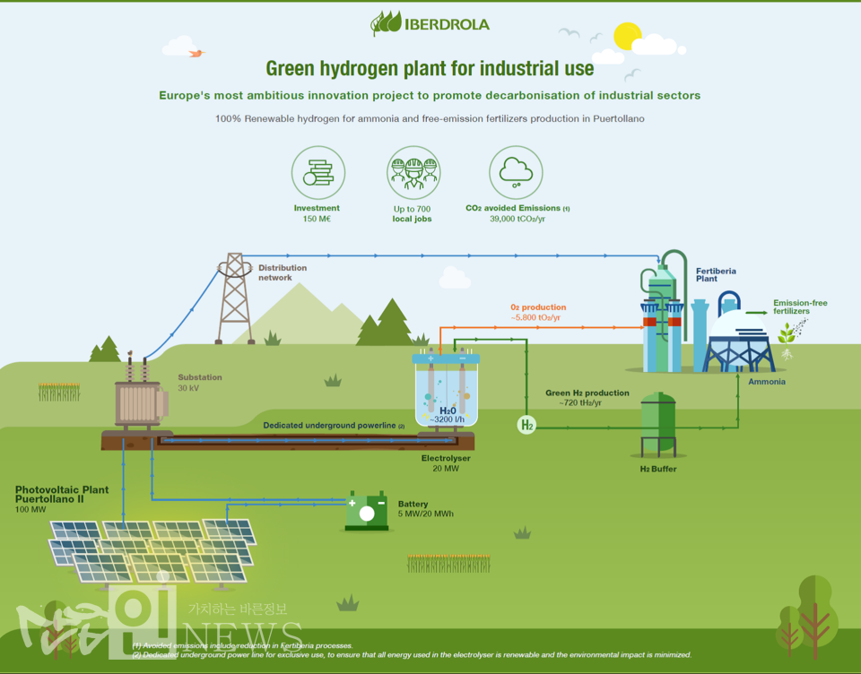

위 사진은 연료전지 중 부생수소 연료전지를 만드는 과정의 사진입니다.
정보과학 기술-수소
수소가 왜 여러 친환경 에너지 중 가장 주목을
받고있는가?
첫째, 지구상에 풍부하게 존재하기 때문에 고갈의 걱정이
없다.
둘째, 연소가 되더라도 물이 되어 탄소를 배출하지 않는다.
수소 기술 종류
- 1.부생수소
- 2.개질수소
- 3.그린수소
| 수소 기술 종류 | |
|---|---|
 |
부생수소란? 부생수소는 석유 화합 공정 과정을 통해 메탈, 동유와 같은 물질을 얻고, 1%미만의 수소가 생성되는데 그 수소를 부생수소라고 한다. 가장 저렴하게 얻을 수 있는것이 장점. |
| 개질수소란? 개질수소는 천연가스 등 수소를 포함한 화석연료에서 추출하는 수소를 말하며, 가장 널리 사용이 되고있다. 부생수소와 개질수소를 그레이 수소라고 칭한다. |
 |
| 그린수소란? 그린수소는 신재생 에너지와 물이 만나 산소와 수소로 나뉘는데 여기서 나온 수소를 그린수소라고 칭한다. |
 |